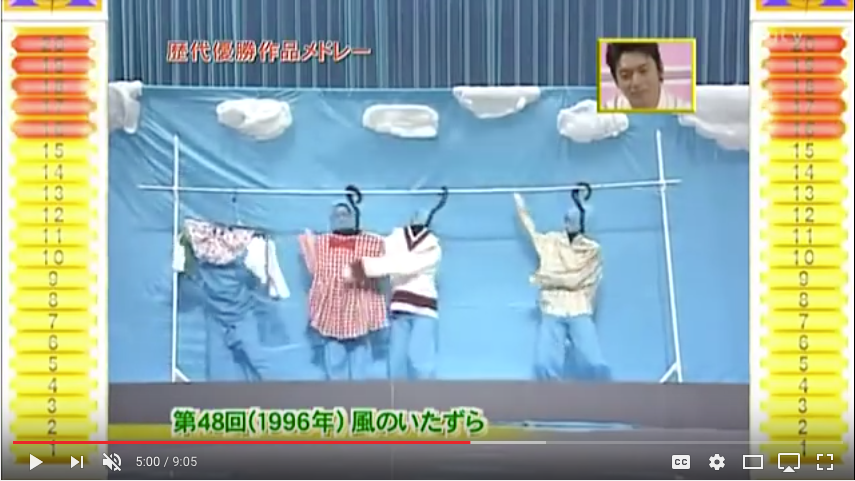
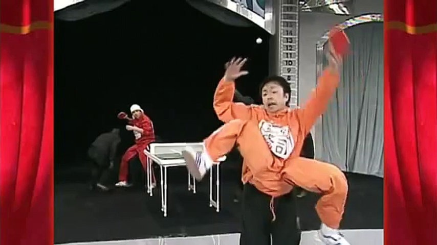
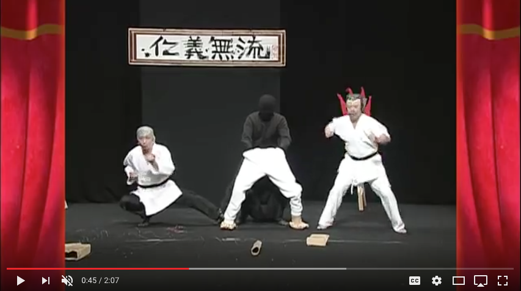
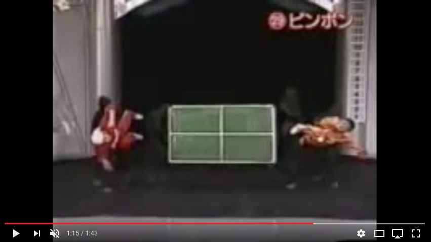

laura lin:
mothballs—my grandma’s clothes all smell like that stuff. i wasn’t very close to her but when she passed away i got a pair of her pants to keep in memory of her, and the smell immediately transported me to one summer when i slept in my grandparent’s house and the blankets had that same, strangely comforting smell (i didn’t know what it was at the time, but i always associated it with her after that).
here to read more stories from laura
kaitlyn nee:
a lot of my clothes (sweatpants and sweaters) used to be my grandparents/parents/older sister, so wearing them makes me think of them… and even though I wear them less now I have a hard time donating because it’s like letting my grandparents go (esp now they are in their 90s and may leave any time soon I wanna preserve any stuff by them as much as possible…..not just items but also when they share stories from their past when they were younger)
OH actually some old Japanese songs are nostalgic for me because my grandpa used to listen and sing them all the time (stopped when I was in high school cuz of old age, but he kept going for a while for memories and also to exercise his throat) if you want song names I can send you names but yeah back then Japan rule Taiwan so my grandpa speaks Japanese
https://www.youtube.com/watch?v=MttTAKB7BhM
I used to watch this TV show with my grandpa when I was in elementary school in taiwan
https://www.youtube.com/watch?v=ZleYJN4YoGo
In English the show is called “Kasou Taishou”
https://www.youtube.com/watch?v=yfdQY0A3n0o
https://www.youtube.com/watch?v=tyn-wz5Mk_I
ruth lin:
my grandma was really crafty
when I was younger she made a lot of knit sweaters with animals on them. I remember one with a giraffe. they were itchy but I liked the designs on them. there might have been another one with hippos or something
she knit shoes too apparently but I never saw them
when she lived with us for a while, she’d make these paper diamond sculptures out of cereal boxes and stuff and then would wrap thread around them carefully in a rainbow
and then she would attach them to more strings and beads and things and make these sort of ornate necklaces
I had one and my cousin had one and everyone had one
I think we used to hang them on the door or keep them in this one particular drawer
here to read more stories from ruth
taryn oshiro-wachi:
gardenias remind me of my gma and the front door of our house, they only bloom once in a while, but when they do my gma would sometimes pick them and bring them into the house or hide them in our lunch boxes.